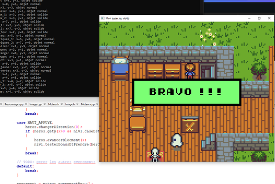
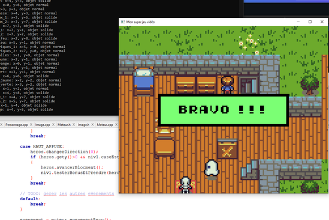

This is a 2D pixel art game, developed in C++. It uses SDL2 and SDL_image as base libraries for the game engine. This project was realized alone. The map and characters are managed using a position dictionary and a sprite image table. I implemented character animations, enemy logic, defeat and victory conditions, as well as a dynamic camera that automatically follows the player. This project allowed me to understand the basics of graphic rendering, the logic of a simple game engine, and develop my skills in game logic programming. 这是一个使用 C++ 开发的 2D 像素艺术风格游戏。它使用 SDL2 和 SDL_image 作为游戏引擎的基础库。该项目由我独立完成。地图和角色通过位置字典和精灵图片表进行管理。我实现了角色动画、敌人逻辑、胜负条件以及自动跟随玩家的动态摄像机。该项目让我了解了图形渲染的基础、简单游戏引擎的逻辑，并锻炼了我的游戏逻辑编程能力。 Il s'agit d'un jeu 2D en style pixel art, développé en C++. Il utilise SDL2 et SDL_image comme bibliothèques de base pour le moteur du jeu. Ce projet a été réalisé seul. La carte et les personnages sont gérés à l'aide d'un dictionnaire de positions et d'une table d’image de sprites. J'ai implémenté les animations des personnages, la logique des ennemis, les conditions de défaite et de victoire, ainsi qu'une caméra dynamique qui suit automatiquement le joueur. Ce projet m’a permis de comprendre les bases du rendu graphique, la logique d’un moteur de jeu simple, et de développer mes compétences en programmation de la logique de jeu.
Key Features 主要功能 Fonctionnalités Clés
- Custom Rendering Engine with SDL2. 基于 SDL2 的自定义渲染引擎。 Moteur de rendu personnalisé avec SDL2.
- Enemy AI with state machines. 基于状态机的敌人 AI。 IA ennemie avec machines à états.
- Dynamic Camera System. 动态摄像机系统。 Système de caméra dynamique.
Project Gallery 项目展示 Galerie du Projet

 
